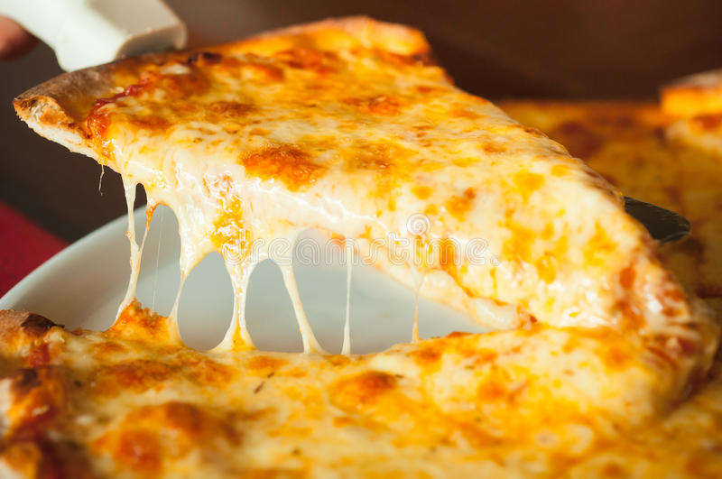

Cheese Pizza Recipe

Ingredients
- 1 ball Best Pizza Dough (or Food Processor Dough or Thin Crust Dough
- 1/3 cup of Easy Pizza Sauce
- 4 ounces fresh mozzarella cheese
- 4 ounces (1 cup) shredded mozzarella cheese
- 1/4 teaspoon garlic powder
- 1 teaspoon dried oregano
- Kosher salt
- Semolina flour or cornmeal, for dusting the pizza peel
Instructions
- Make the pizza dough: Follow the Best Pizza Dough recipe to prepare the dough. (This takes about 15 minutes to make and 45 minutes to rest.)
- Place a pizza stone in the oven and preheat to 500°F. OR preheat your pizza oven (here’s the pizza oven we use).
- Make the pizza sauce: Make the Easy Pizza Sauce.
- Prepare the toppings: Slice or tear the fresh mozzarella into small pieces.
- Bake the pizza: When the oven is ready, dust a pizza peel with cornmeal or semolina flour. (If you don’t have a pizza peel, you can use a rimless baking sheet or the back of a rimmed baking sheet. But a pizza peel is well worth the investment!) Stretch the dough into a circle; see How to Stretch Pizza Dough for instructions. Then gently place the dough onto the pizza peel.
- Spread the pizza sauce over the dough using the back of a spoon to create a thin layer. Add the pieces of fresh mozzarella cheese evenly across the dough, then top with the shredded mozzarella cheese. Sprinkle evenly with the garlic powder, dried oregano, and a few pinches of kosher salt.
- Use the pizza peel to carefully transfer the pizza onto the preheated pizza stone. Bake the pizza until the cheese and crust are nicely browned, about 5 to 7 minutes in the oven (or 1 minute in a pizza oven). Slice into pieces and serve immediately.